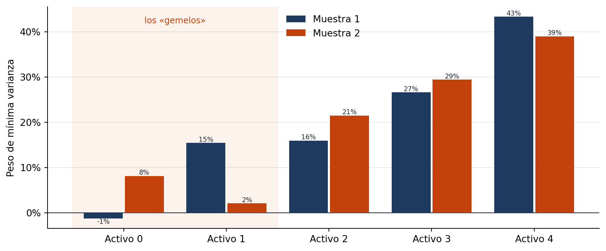
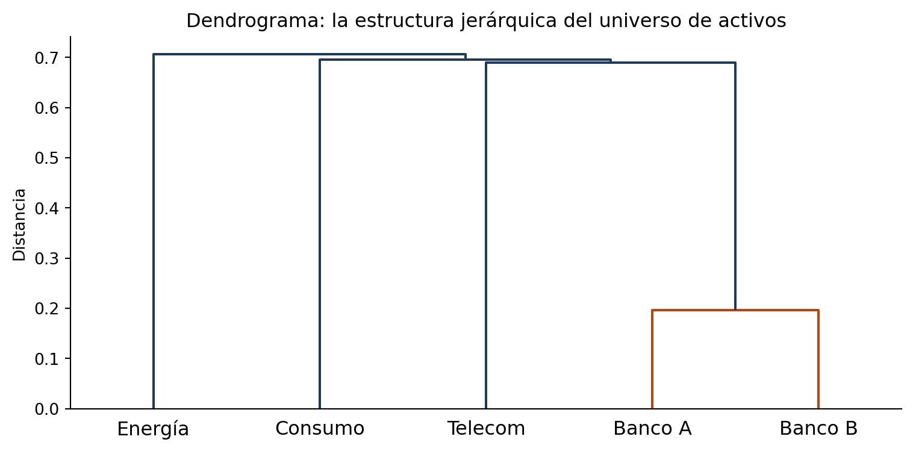
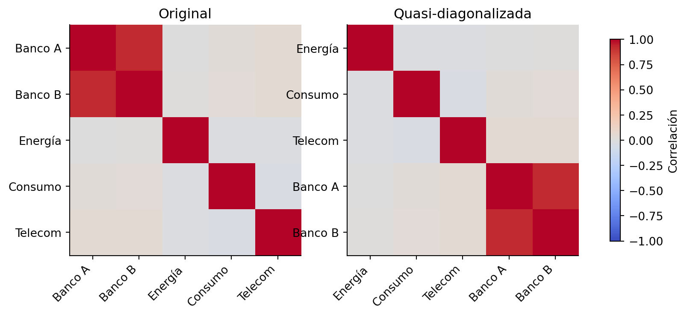
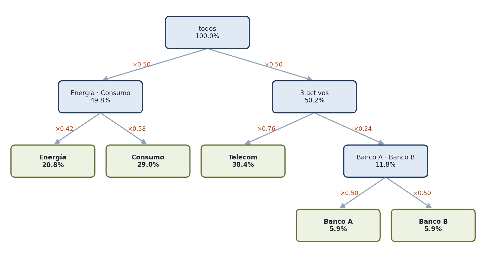
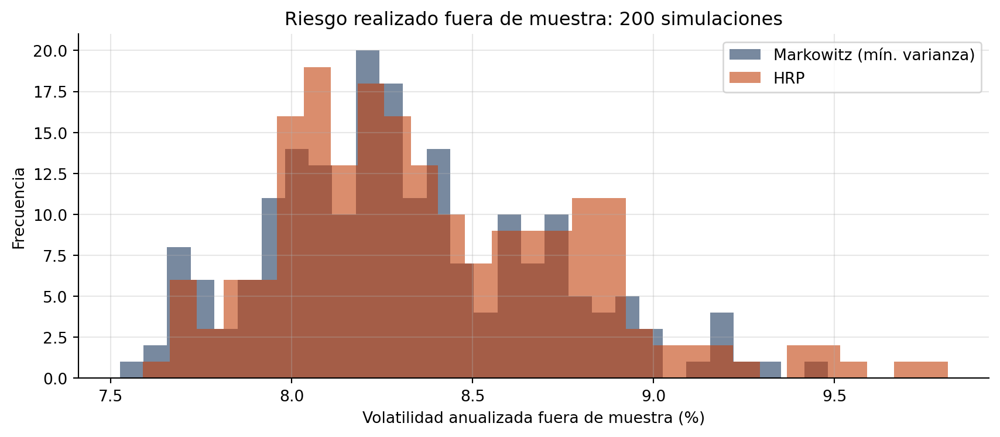
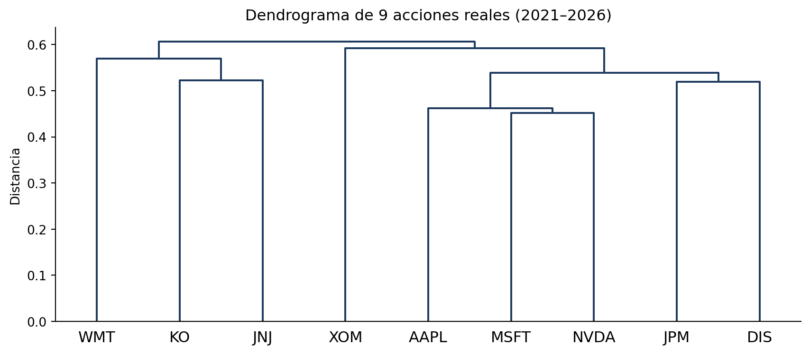
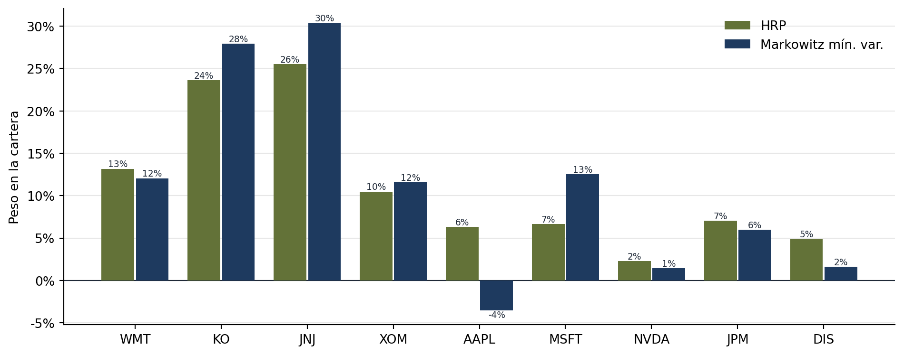

import numpy as np
import pandas as pd
import matplotlib.pyplot as plt
from scipy.cluster import hierarchy
from scipy.spatial.distance import squareform
np.set_printoptions(precision=4, suppress=True)
rng = np.random.default_rng(42)9 Capítulo 9: Hierarchical Risk Parity (HRP)
Clustering jerárquico para construir portafolios robustos
Resumen
La optimización de Markowitz exige invertir la matriz de covarianzas, y esa operación amplifica brutalmente los errores de estimación: carteras extremas, inestables y que rinden mal fuera de muestra. Marcos López de Prado propuso en 2016 una alternativa que no invierte ninguna matriz: agrupar los activos por similitud con clustering jerárquico y repartir el capital de arriba hacia abajo según el riesgo de cada grupo. En este capítulo implementamos HRP desde cero y lo comparamos con Markowitz.
Introducción: el talón de Aquiles de Markowitz
En el capítulo anterior celebramos la elegancia de la frontera eficiente. Ahora toca la mala noticia: en la práctica, la optimización de media-varianza tiene fama de producir carteras inestables y extremas. Los operadores la llaman, con sorna, “error maximizer”: una máquina de maximizar errores.
¿Por qué? La solución de Markowitz depende de \(\Sigma^{-1}\), la inversa de la matriz de covarianzas. Y esa inversión tiene dos problemas serios:
- Amplifica el error de estimación. \(\Sigma\) se estima con datos históricos, así que trae ruido. Al invertirla, el ruido no se atenúa: se multiplica. Un cambio minúsculo en una correlación puede dar vuelta la cartera entera.
- Se vuelve numéricamente frágil cuando los activos están correlacionados. Si dos activos se mueven casi igual (pensá en dos ETFs del mismo sector), \(\Sigma\) está cerca de ser singular —no invertible— y la inversa “explota”: aparecen pesos gigantes, positivos en uno y negativos en el otro.
Veámoslo con un experimento antes de proponer la solución.
Experimento: la inestabilidad en acción
Simulamos retornos de 5 activos donde dos de ellos están muy correlacionados, y calculamos la cartera de mínima varianza de Markowitz con dos muestras distintas de la misma historia. Si el método fuera robusto, ambas muestras deberían dar carteras parecidas.
def simular_retornos(n_dias, seed):
"""5 activos; los activos 0 y 1 comparten un factor común (muy correlacionados)."""
rng = np.random.default_rng(seed)
factor_comun = rng.normal(0, 0.015, n_dias)
r = np.column_stack([
factor_comun + rng.normal(0.0004, 0.004, n_dias), # activo 0
factor_comun + rng.normal(0.0004, 0.004, n_dias), # activo 1 (casi gemelo del 0)
rng.normal(0.0005, 0.012, n_dias), # activo 2
rng.normal(0.0003, 0.010, n_dias), # activo 3
rng.normal(0.0004, 0.008, n_dias), # activo 4
])
return r
def pesos_min_varianza(Sigma):
"""Cartera de mínima varianza: w ∝ Σ⁻¹ 1."""
unos = np.ones(Sigma.shape[0])
w = np.linalg.solve(Sigma, unos)
return w / w.sum()
# Misma "realidad", dos muestras distintas
for seed in [1, 2]:
r = simular_retornos(500, seed)
w = pesos_min_varianza(np.cov(r.T))
print(f"Muestra {seed}: pesos = {np.round(w, 3)}")Muestra 1: pesos = [-0.012 0.154 0.159 0.266 0.433]
Muestra 2: pesos = [0.081 0.02 0.215 0.294 0.39 ]Mirá los dos primeros activos en la Figura 9.1: entre una muestra y otra intercambian su peso —el que tenía mucho pasa a tener casi nada, y viceversa, con alguna posición corta de por medio—, mientras los otros tres activos apenas se mueven. El optimizador está apostando a diferencias entre los activos 0 y 1 que son puro ruido muestral: como son casi sustitutos, cualquier mínima ventaja estimada en uno se traduce en sacarle peso al otro. Con carteras reales de 50 o 100 activos y gemelos más correlacionados, el efecto se agrava hasta producir cortos grandes que se compensan entre sí.

NotaEl diagnóstico de López de Prado
Marcos López de Prado (2016) resumió el problema así: la optimización clásica trata a todos los activos como sustitutos potenciales de todos, cuando en realidad los mercados tienen estructura jerárquica: las acciones bancarias se parecen entre sí, los bonos entre sí, y recién después compiten los grupos. Ignorar esa jerarquía obliga a invertir una matriz enorme y frágil. Usarla permite repartir el capital sin invertir nada.
La propuesta, Hierarchical Risk Parity (HRP), tiene tres pasos: (1) agrupar activos por similitud, (2) reordenarlos según esos grupos, y (3) repartir el capital descendiendo por el árbol de grupos. Vamos paso a paso.
La Figura 9.2 muestra la tubería completa antes de entrar en cada paso.
flowchart LR
R["Retornos"] --> C["Correlación ρ"]
subgraph P1["Paso 1: clustering"]
D["Distancia<br/>√((1−ρ)/2)"] --> L["linkage<br/>(dendrograma)"]
end
subgraph P2["Paso 2: reordenar"]
O["Orden de<br/>las hojas"]
end
subgraph P3["Paso 3: bisección"]
B["Partir en mitades<br/>y repartir por<br/>varianza inversa"]
end
C --> D
L --> O
O --> B
S["Covarianzas Σ<br/>(por bloques,<br/>sin invertir)"] --> B
B --> W(["Pesos HRP"])
classDef dato fill:#e0e9f4,stroke:#1e3a5f
classDef fin fill:#eef2e3,stroke:#637238
class R,C,S dato
class W fin
9.1 Paso 1: Tree clustering — agrupar activos por similitud
Primero necesitamos medir qué tan “parecidos” son dos activos. Partimos de la correlación \(\rho_{ij}\) y la convertimos en una distancia:
\[d_{ij} = \sqrt{\frac{1 - \rho_{ij}}{2}}\]
La fórmula tiene sentido: dos activos perfectamente correlacionados (\(\rho = 1\)) están a distancia 0; dos perfectamente opuestos (\(\rho = -1\)) están a distancia 1. Con esa matriz de distancias aplicamos clustering jerárquico: un algoritmo que va uniendo los pares más cercanos hasta armar un árbol (el dendrograma).
# Trabajamos con una muestra más larga para estimar mejor
retornos = pd.DataFrame(
simular_retornos(1000, seed=7),
columns=["Banco A", "Banco B", "Energía", "Consumo", "Telecom"],
)
corr = retornos.corr()
print("Matriz de correlaciones:\n", corr.round(2))
# Correlación → distancia
dist = np.sqrt((1 - corr) / 2)
# Clustering jerárquico (single linkage, como en el paper original)
enlaces = hierarchy.linkage(squareform(dist.values), method="single")Matriz de correlaciones:
Banco A Banco B Energía Consumo Telecom
Banco A 1.00 0.92 -0.00 0.03 0.05
Banco B 0.92 1.00 0.00 0.03 0.05
Energía -0.00 0.00 1.00 -0.02 -0.02
Consumo 0.03 0.03 -0.02 1.00 -0.03
Telecom 0.05 0.05 -0.02 -0.03 1.00fig, ax = plt.subplots(figsize=(8, 4))
hierarchy.dendrogram(enlaces, labels=corr.columns.tolist(), ax=ax)
ax.set_title("Dendrograma: la estructura jerárquica del universo de activos")
ax.set_ylabel("Distancia")
plt.tight_layout()
plt.show()
El dendrograma de la Figura 9.3 cuenta la historia que el optimizador de Markowitz nunca ve: los dos bancos forman un grupo compacto (distancia chica), y recién después se conectan con el resto. HRP va a usar exactamente esa estructura.
9.2 Paso 2: Quasi-diagonalización — reordenar la matriz
El segundo paso es puramente organizativo: reordenar los activos según el orden de las hojas del árbol, de modo que los activos similares queden contiguos. Con ese orden, la matriz de covarianzas queda “casi diagonal por bloques”: las covarianzas grandes se concentran cerca de la diagonal.
# El orden de las hojas del dendrograma
orden = hierarchy.leaves_list(enlaces)
tickers_ordenados = corr.columns[orden].tolist()
print("Orden jerárquico:", tickers_ordenados)
# Reordenamos la matriz de correlaciones con ese orden
corr_ordenada = corr.iloc[orden, orden]Orden jerárquico: ['Energía', 'Consumo', 'Telecom', 'Banco A', 'Banco B']fig, axes = plt.subplots(1, 2, figsize=(10, 4))
for ax, m, titulo in [(axes[0], corr, "Original"),
(axes[1], corr_ordenada, "Quasi-diagonalizada")]:
im = ax.imshow(m, cmap="coolwarm", vmin=-1, vmax=1)
ax.set_xticks(range(len(m)), m.columns, rotation=45, ha="right")
ax.set_yticks(range(len(m)), m.columns)
ax.set_title(titulo)
fig.colorbar(im, ax=axes, shrink=0.8, label="Correlación")
plt.show()
En este ejemplo chico el reordenamiento de la Figura 9.4 es sutil, pero con decenas de activos el efecto es dramático: los bloques de color (sectores, regiones) se vuelven visibles a simple vista. La matriz reordenada es el “mapa” sobre el que repartiremos el capital.
9.3 Paso 3: Recursive bisection — repartir el capital por el árbol
Acá está el corazón de HRP. En lugar de resolver un sistema global (que exigiría invertir \(\Sigma\)), repartimos el capital de arriba hacia abajo:
- Arrancamos con el 100% del capital y la lista completa (ya ordenada) de activos.
- Partimos la lista en dos mitades y calculamos el riesgo de cada mitad.
- Le damos más capital a la mitad menos riesgosa, en proporción inversa a su varianza: \[\alpha_1 = 1 - \frac{V_1}{V_1 + V_2}, \qquad \alpha_2 = 1 - \alpha_1\]
- Repetimos recursivamente dentro de cada mitad, hasta llegar a activos individuales.
Un detalle de implementación: esta versión parte la lista ordenada por la mitad, como el paper original de 2016, y no siguiendo exactamente las ramas del dendrograma. Gracias al reordenamiento del Paso 2, las mitades igual tienden a respetar los grupos; existen variantes que cortan siguiendo los clusters del árbol.
Para medir el riesgo de un grupo usamos la cartera inverse-variance dentro del grupo (cada activo pesa lo inverso de su varianza), que tiene forma cerrada y solo usa la diagonal —nada de inversas de matrices completas.
def pesos_inverse_variance(cov):
"""Pesos proporcionales a 1/varianza (solo usa la diagonal)."""
iv = 1 / np.diag(cov.values)
return iv / iv.sum()
def varianza_cluster(cov, items):
"""Varianza del sub-portafolio inverse-variance de un grupo de activos."""
sub = cov.loc[items, items]
w = pesos_inverse_variance(sub)
return float(w @ sub.values @ w)
def hrp(cov, orden_tickers):
"""Recursive bisection sobre la lista ordenada de activos."""
pesos = pd.Series(1.0, index=orden_tickers)
grupos = [orden_tickers] # arrancamos con un solo grupo: todos
while grupos:
# Partimos cada grupo vigente en dos mitades
nuevos = []
for g in grupos:
if len(g) <= 1:
continue
mitad = len(g) // 2
izq, der = g[:mitad], g[mitad:]
# Riesgo de cada mitad y factor de asignación
v_izq = varianza_cluster(cov, izq)
v_der = varianza_cluster(cov, der)
alpha = 1 - v_izq / (v_izq + v_der)
pesos[izq] *= alpha # la mitad menos riesgosa recibe más capital
pesos[der] *= (1 - alpha)
nuevos += [izq, der]
grupos = nuevos
return pesos
cov = retornos.cov()
w_hrp = hrp(cov, tickers_ordenados)
print("Pesos HRP:")
print((w_hrp * 100).round(1).astype(str) + " %")
print(f"\nSuma: {w_hrp.sum():.1%}")Pesos HRP:
Energía 20.8 %
Consumo 29.0 %
Telecom 38.4 %
Banco A 5.9 %
Banco B 5.9 %
dtype: object
Suma: 100.0%La Figura 9.5 muestra el recorrido completo de la bisección para este universo: cada flecha lleva el factor que recibe esa mitad, y cada caja, el capital acumulado.

Observá el resultado: los dos bancos —que comparten casi todo su riesgo— se reparten entre sí la porción del capital que le toca a su grupo, en lugar de recibir cada uno una apuesta independiente. Los activos diversificadores reciben pesos sustanciales y no aparece ninguna posición corta ni extrema. Y en todo el proceso no invertimos una sola matriz.
TipPor qué esto es ‘risk parity’ jerárquico
En cada bifurcación, el capital se reparte de manera inversamente proporcional al riesgo: las dos ramas quedan aportando riesgos comparables. Es la idea de risk parity (paridad de riesgo), aplicada recursivamente sobre la jerarquía del árbol en lugar de activo por activo.
9.4 HRP vs. Markowitz: la prueba fuera de muestra
La comparación justa no es “qué cartera se ve mejor” sino cuál funciona con datos que no vio. Repetimos muchas veces el experimento: estimamos ambas carteras con un período de entrenamiento y medimos su volatilidad en el período siguiente.
def experimento(n_sims=200, n_train=250, n_test=250):
vol_mkw, vol_hrp = [], []
for sim in range(n_sims):
r = simular_retornos(n_train + n_test, seed=1000 + sim)
train, test = r[:n_train], r[n_train:]
df_train = pd.DataFrame(train, columns=corr.columns)
cov_train = df_train.cov()
# --- Markowitz: mínima varianza (requiere invertir Σ) ---
w_m = pesos_min_varianza(cov_train.values)
# --- HRP: clustering + bisección (sin inversas) ---
d = np.sqrt((1 - df_train.corr()) / 2)
lk = hierarchy.linkage(squareform(d.values), method="single")
orden_t = df_train.columns[hierarchy.leaves_list(lk)].tolist()
w_h = hrp(cov_train, orden_t).reindex(df_train.columns).values
# Volatilidad realizada FUERA de muestra (anualizada)
vol_mkw.append(np.std(test @ w_m) * np.sqrt(252))
vol_hrp.append(np.std(test @ w_h) * np.sqrt(252))
return np.array(vol_mkw), np.array(vol_hrp)
vol_mkw, vol_hrp = experimento()
print("Volatilidad anualizada fuera de muestra (promedio de 200 simulaciones):")
print(f" Markowitz (mín. varianza): {vol_mkw.mean():.2%} (desvío entre sims: {vol_mkw.std():.2%})")
print(f" HRP: {vol_hrp.mean():.2%} (desvío entre sims: {vol_hrp.std():.2%})")Volatilidad anualizada fuera de muestra (promedio de 200 simulaciones):
Markowitz (mín. varianza): 8.31% (desvío entre sims: 0.38%)
HRP: 8.39% (desvío entre sims: 0.42%)fig, ax = plt.subplots(figsize=(9, 4))
ax.hist(vol_mkw * 100, bins=30, alpha=0.6, label="Markowitz (mín. varianza)")
ax.hist(vol_hrp * 100, bins=30, alpha=0.6, label="HRP")
ax.set_xlabel("Volatilidad anualizada fuera de muestra (%)")
ax.set_ylabel("Frecuencia")
ax.set_title("Riesgo realizado fuera de muestra: 200 simulaciones")
ax.legend()
ax.grid(True, alpha=0.3)
plt.tight_layout()
plt.show()
La Figura 9.6 muestra el patrón típico (y el que reporta el paper original): dentro de la muestra Markowitz siempre “gana” —por definición minimiza la varianza de esos datos—, pero fuera de muestra HRP es más estable y frecuentemente más eficiente, porque no gastó grados de libertad ajustándose al ruido. La distribución de HRP suele ser más angosta: menos sorpresas.
AdvertenciaHRP no es magia
HRP renuncia a usar información que Markowitz sí usa (las correlaciones exactas entre grupos lejanos y los retornos esperados). Si tus estimaciones de \(\mu\) y \(\Sigma\) fueran perfectas, Markowitz sería imbatible. HRP gana justamente porque en el mundo real nunca lo son. La elección depende de cuánto confiás en tus estimaciones — un tema que retomamos en el capítulo siguiente con Black-Litterman, que ataca el mismo problema desde otro ángulo: mejorar las estimaciones en lugar de esquivarlas.
9.5 Con datos reales
La simulación nos dejó controlar la estructura de correlaciones; ahora veamos si HRP la descubre solo en datos de mercado. Usamos el dataset del libro (datos/precios.csv, ver Apéndice B): 9 acciones de sectores distintos, cinco años de precios diarios ajustados.
precios = pd.read_csv("../datos/precios.csv", index_col="Date", parse_dates=True)
r_real = precios.drop(columns="SPY").pct_change().dropna() # SPY es un índice, no un activo más
# El pipeline completo de HRP, tal cual lo construimos
dist_real = np.sqrt((1 - r_real.corr()) / 2)
enlaces_real = hierarchy.linkage(squareform(dist_real.values), method="single")
fig, ax = plt.subplots(figsize=(9, 4))
hierarchy.dendrogram(enlaces_real, labels=r_real.columns.tolist(), ax=ax)
ax.set_title("Dendrograma de 9 acciones reales (2021–2026)")
ax.set_ylabel("Distancia")
plt.tight_layout()
plt.show()
Mirá la Figura 9.7 antes de seguir: nadie le dijo al algoritmo qué sector es cada empresa, y sin embargo las tecnológicas (AAPL, MSFT, NVDA) se abrazan en un cluster compacto, y las defensivas de consumo (KO, JNJ, WMT) forman el suyo. La estructura jerárquica que López de Prado postula no es una hipótesis: está en los datos.
orden_real = r_real.columns[hierarchy.leaves_list(enlaces_real)].tolist()
w_hrp_real = hrp(r_real.cov(), orden_real)
w_mkw_real = pd.Series(pesos_min_varianza(r_real.cov().values), index=r_real.columns)
comparacion = pd.DataFrame({"HRP": w_hrp_real, "Markowitz mín. var.": w_mkw_real})
print((comparacion * 100).round(1).astype(str) + " %") HRP Markowitz mín. var.
AAPL 6.3 % -3.5 %
DIS 4.9 % 1.6 %
JNJ 25.5 % 30.4 %
JPM 7.1 % 6.0 %
KO 23.6 % 27.9 %
MSFT 6.6 % 12.6 %
NVDA 2.3 % 1.5 %
WMT 13.2 % 12.1 %
XOM 10.5 % 11.6 %La Figura 9.8 pone las dos columnas lado a lado, en el orden del dendrograma:

La comparación repite lo que vimos en la simulación, ahora sin trucos. Buscá en la columna de Markowitz las tecnológicas: shortea una para comprar otra — la apuesta fina entre “gemelos” que en el experimento sintético identificamos como puro ruido muestral, reproducida con datos de verdad. Con 9 activos el daño es contenido; con 50 o 100, esos cortos se multiplican. HRP, en cambio, asigna a todos los activos pesos positivos y moderados, dándole más capital al cluster defensivo y repartiendo dentro de cada grupo. Es la cartera que podrías ejecutar mañana sin explicarle nada raro a un comité de inversiones.
9.6 Errores comunes
AdvertenciaTrampas frecuentes
- Pasarle a
linkagela matriz cuadrada directamente:scipyespera la forma condensada (vector triangular); usásquareform(dist)o interpretará las filas como observaciones. - Olvidar reordenar antes de la bisección: la partición en mitades solo tiene sentido sobre la lista quasi-diagonalizada. Sobre el orden original, las mitades mezclan grupos y HRP pierde su lógica.
- Usar la correlación como distancia sin transformar: la correlación no es una métrica (activos idénticos tendrían “distancia” 1). La transformación \(\sqrt{(1-\rho)/2}\) es la que convierte similitud en distancia válida.
- Comparar métodos dentro de la muestra: cualquier optimizador le gana a HRP con los datos con los que fue ajustado. La comparación honesta es siempre fuera de muestra.
9.7 Ejercicios Propuestos
ImportanteEjercicios
- Sensibilidad al linkage: repetí el clustering con
method="ward"ymethod="complete". ¿Cambia el orden de las hojas? ¿Y los pesos finales? - Más activos: extendé la simulación a 10 activos con 3 grupos de correlación y verificá que los bloques aparecen en la matriz quasi-diagonalizada.
- Equiponderada como referencia: agregá al experimento fuera de muestra la cartera equiponderada (\(w_i = 1/N\)). ¿Dónde queda respecto de Markowitz y HRP?
- Estrés de correlación: aumentá la correlación de los “gemelos” a 0.99 y observá qué pasa con los pesos de Markowitz y con los de HRP.
- HRP con otro linkage sobre datos reales: repetí la sección “Con datos reales” usando
method="ward"en lugar desingle. ¿Cambian los clusters? ¿Y los pesos? ¿Cuál te resulta más creíble económicamente?
Podés resolver estos ejercicios acá mismo: la celda ejecuta Python en tu navegador, sin instalar nada (la primera ejecución tarda unos segundos mientras carga el entorno; los paquetes que importes se instalan solos).